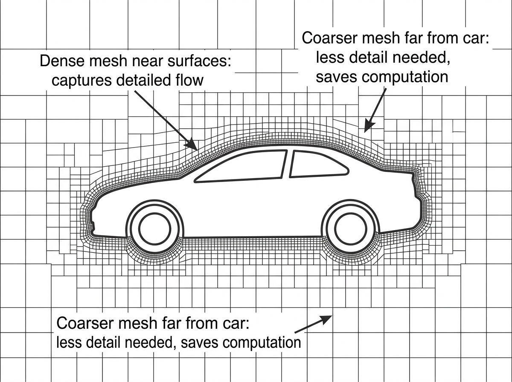
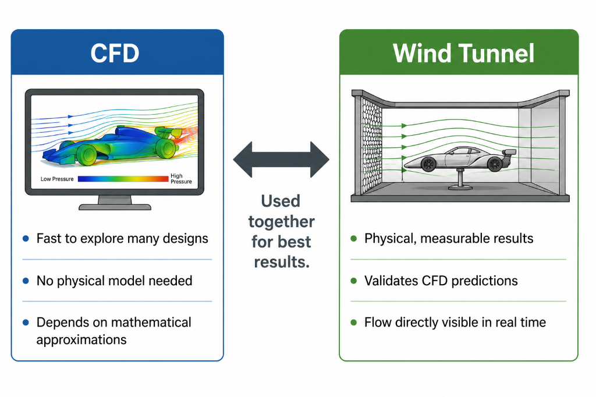

01 — A DIFFERENT KIND OF MODULE
The tool you have already been using
Most modules in this course introduce a new topic. This one explains a tool you have been using without fully knowing what it was.
Every time you adjusted a slider in the Aero Playground and watched downforce and drag numbers update instantly, you were using a simplified computational aerodynamics model. This module explains what that actually means, what real CFD does differently, and why the gap between the two matters.
By the end of this module, you will understand not just what CFD is, but where it sits in the chain of tools from simple estimation to full simulation — and why each level of that chain has its place in real engineering work.
02 — WHAT CFD ACTUALLY DOES
Computational Fluid Dynamics — calculating, not guessing
CFD stands for Computational Fluid Dynamics. It is the process of solving fluid dynamics problems — airflow problems — using computation rather than physical experiment.
The key word is calculates. CFD does not just guess or estimate. It numerically solves the actual mathematical equations that govern how fluids move — the same equations that describe real airflow in the real world.
These equations, called the Navier-Stokes equations, describe how fluid velocity, pressure, and other properties relate to each other at every point in space and change over time. Solving them for a complex three-dimensional shape like a race car requires enormous computational power — which is why CFD became seriously practical only as computers became powerful enough.
03 — THE MESH
Dividing space into millions of tiny pieces
The first step in any CFD simulation is building a mesh — a three-dimensional network of cells that fills the space around the object being studied. Think of it like dividing all the air around a car into millions of tiny boxes or tetrahedra, each one representing a small region of space.
The CFD solver then calculates the airflow properties — velocity, pressure, temperature — at each of these cells, one at a time, while also accounting for how each cell's conditions affect its neighboring cells. The equations are solved repeatedly across the entire mesh, updating all the values iteratively until the solution settles into a stable, consistent state. This process is called convergence.

A typical Formula 1 car simulation might involve a mesh of anywhere from a few million to well over a hundred million cells. Each iteration of solving the equations across all those cells requires substantial computation. A single complete simulation can take hours or even days on a powerful computing cluster.
04 — MESH DENSITY
Fine where it matters, coarse where it does not
One of the most important decisions in setting up a CFD simulation is how fine or coarse to make the mesh in different regions.
Very fine cells near the car's surfaces, around wing edges, and in wake regions. This captures small, detailed flow features accurately where the engineering decisions are made.
Larger cells spread further from the car where the flow is relatively simple. This runs much faster with no meaningful loss of accuracy where it matters.
Too coarse in the wrong place produces inaccurate results. Too fine everywhere wastes enormous computation for no meaningful gain. Getting this balance right is a significant part of the skill in CFD simulation.
05 — TURBULENCE MODELS
The necessary approximation — and the honest limitation
The Navier-Stokes equations, if solved completely and exactly, would capture every detail of turbulent flow — every tiny swirl and eddy. However, the smallest turbulent structures in real airflow are far tinier than any practical mesh can resolve, even with the most powerful computers available.
Resolving every turbulent detail directly would require a mesh so fine that a single simulation would take longer than the age of the universe to compute.
To make CFD practical, engineers use turbulence models — mathematical approximations that represent the average effect of turbulence without resolving every tiny detail. Different turbulence models exist, each with different levels of accuracy, computational cost, and suitability for different kinds of flows.
This is one of the core reasons why CFD results need to be validated against wind tunnel measurements rather than simply trusted on their own. The turbulence model is an approximation — how well it approximates real turbulent behaviour depends on the specific flow situation. For some flows it works very well; for others it can introduce meaningful errors.
06 — THE ANALYSIS CHAIN
From simple formula to full simulation
Now you have enough context to understand exactly where the Aero Playground sits in the chain of aerodynamic analysis tools.

The thin airfoil theory and finite wing equations from Modules 3, 4, and 6. Fast, transparent, and useful for early design thinking — but assume idealized conditions and cannot capture complex 3D effects.
Uses the same underlying analytical formulas but packages them with a user-friendly interface. It is more accessible than full CFD, but still a collection of simplified formulas — not a numerical solution of the flow equations.
Full CFD solves the Navier-Stokes equations numerically, capturing 3D effects and separation. Wind tunnels provide physical measurement that validates CFD and captures phenomena that even advanced CFD can miss.
Good engineering uses the right tool for the specific question being asked, rather than always reaching for the most powerful and expensive option. Simple formulas for early exploration. Full CFD for detailed design validation. Wind tunnels for physical ground truth.
07 — BRINGING IT TOGETHER
Engineering literacy about the tools you use
You have now used simplified aerodynamic estimation throughout this course, and you understand what full CFD does differently.
You know that the Aero Playground numbers are directionally useful but represent idealized conditions, not the complex three-dimensional reality of a real race car in airflow. You know that full CFD captures more of that reality, at significant computational cost, and that even full CFD uses turbulence model approximations that require validation against physical tests.
This is genuine, useful engineering literacy. Understanding not just what a tool produces, but what assumptions it makes and where those assumptions break down, is a foundational skill for anyone working with engineering analysis — whether in motorsport or anywhere else.
- Why does making the mesh finer everywhere not simply always produce better results, beyond just taking longer to compute?
- If CFD turbulence models involve approximations, what does that suggest about how engineers should use CFD results?
- Where in the chain from simple formula to full CFD to wind tunnel do you think the Aero Balance simulator from Module 9 sits, and why?
GO DEEPER
Books worth opening
An Introduction to Computational Fluid Dynamics — Versteeg & MalalasekeraA standard introductory CFD textbook covering the Navier-Stokes equations, meshing, and turbulence models in accessible technical detail.
Race Car Aerodynamics — Joseph KatzCovers how CFD is applied specifically in motorsport alongside wind tunnel testing, providing useful context for how these tools are used together.
Free university CFD resources onlineNumerous free introductory tutorials from universities and software providers provide a good next step for anyone who wants to move from conceptual understanding toward actually running CFD simulations.
Finished reading this lesson?